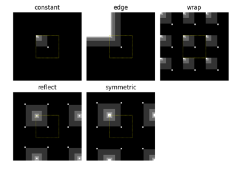

Source
SourceGeometrical transformations and registration¶
Swirl

Interpolation: Edge Modes
Rescale, resize, and downscale
Rescale, resize, and downscale
Build image pyramids
Piecewise Affine Transformation
Piecewise Affine Transformation
Using geometric transformations
Using geometric transformations
Structural similarity index
Types of homographies
Fundamental matrix estimation
Robust line model estimation using RANSAC
Robust line model estimation using RANSAC
Radon transform
Robust matching using RANSAC